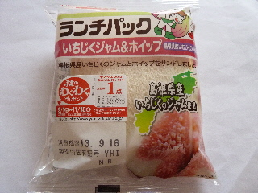

ゆるキャラグランプリ2013の投票方法
2013/09/19
ゆるキャラグランプリ2013は投票しましたか？
投票するには、まず最初に投票IDを登録しなけれまなりません。
面倒ですね。
でもメルアドとパスワードを入力するだけですので簡単です。
ID登録して、応援したいゆるキャラに投票しましょう！
島根県からは
しまねっこ
らとちゃん
い～にゃん
つわみん
やっピー
空runちゃん
以上が今登録されていました。
私は「しまねっこ」に投票しました。
ゆるきゃらグランプリ
http://www.yurugp.jp/index.php
みなさんもどうぞ。
ランチパックのご当地版 島根はいちじくです。
2013/09/15
ランチパックのご当地シリーズが発売されていました。
島根県は「いちじじくジャム＆ホイップ」です。

いちじくが沢山入ってないのは残念ですが、いちじくジャムがとっても美味しかったです。
なんか高級感がある不思議な甘さでした。
また食べたいかも。
島根県の「うまい！自慢のうた」は聞きましたか？
2013/09/14
キリンビールの「選ぼうニッポンのうまい！2013」キャンペーンが始まりましたね。
各都道府県に、「うまい！自慢のうた」があるんですが、島根県は
板わかめ
うずめ寿司
出雲そば
ちまき
しじみ汁
のどぐろの塩焼き
が歌詞にありました。
「ちまき」って名物なんですね。
検索してみた笹巻きのコトみたいです。
笹巻って山陰地方独特のものだったんですね。
あと、のどぐろは塩焼きなんだ。
知らなかったので勉強になりました。
ちなみの鳥取県は
味おこわ
あごのやき
いがいめし
いただき
かに汁
イワシ団子
でした。
キリンビールのホームページで各県の「うまい！自慢のうた」が見れます。
旅行に行く予定がある人はチェックするといいかも？です。
選ぼうニッポンのうまい！2013
http://nippon-umai.jp/
出雲そばまつり2013は歴博であるんですね。
2013/09/12
出雲全国そばまつりは 奉祝
出雲大社「平成の大遷宮」ってことで、今年は会場が県立古代出雲歴史博物館駐車場です。
大社は電車もあるし、駐車場も色々あるのでいいかもって思ったんですが、今年は遷宮で観光客が多いですよね。
たぶん。
きっと付近の道路は大渋滞なんでしょうね。
10/25～10/27でまだ先の話ですけど、渋滞に巻き込まれないようにしたいです。
ちなみに出雲のそばまつりですが、
2008年は出雲文化伝承館
2009年は出雲文化伝承館
2010年は出雲市役所
2011年は出雲市役所
2012年は神門通り交通広場
と、会場がよく変わっています。次はどこでしょうね。
下のホームページでは、出店予定のお店の名前が出てました。
食べたい！って思うお蕎麦屋さんがあるかな？
出雲全国そばまつりのホームページはこちらです。
http://www.izumo-kankou.gr.jp/sobamatsuri/index.html
新聞にパスタファクトリーオルタッジョ（松江市）の広告がありましたね。
2013/09/10
新聞にイタリアンのお店の広告ってあんまりないかも？
本日のパスタランチ700円
サラダ、姉妹店「デル アンゴロ」自家製パン付きですって。
ふーん。パン屋さんが姉妹店なんだ。
パン屋さんのパンが付くのっていいなー。パン屋さんのパン付きで700円ならいいかも。
ちょっと行ってみたいかな。
ホームページでお店を調べてみたら、
ザパスタファクトリー（松江市末次本町82）
おいでやすおおきに屋（松江市末次本町13）
串屋鉄男（松江市寺町205-3）
パネッテリア デル アンゴロ（松江市母衣町11-1）
が同じグループですって。
株式会社ブロックスインダストリーって会社です。
http://brocs-industry.com/
詳しくは上のリンクをどうぞ。